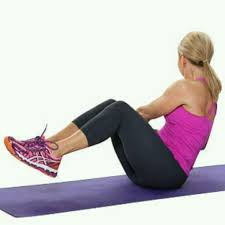

RUSSIAN TWITS - Avançat
COM FER-HO PAS A PAS:
- Tomba’t amb l’esquena inclinada uns 45° respecte al terra.
- Eleva les cames on puguis
- Agafa un pes més pesat (10-15 kg o segons la teva força).
- Gira el tronc cap a la dreta, portant el pes, i després al altre costat.
- Gira cap a l’esquerra amb control i sense perdre l’equilibri.
- Mantingueu l’abdomen dur i l’esquena recta tot el temps.
SERIES:
- 3-4 sèries de 15-20 repeticions per costat.
- Descans: 45 segons o 1 minut entre sèries.
CONSELLS:
- Mantingueu el tronc actiu tot el temps, no facis trampes amb els braços.
- Augmenta el pes si no sents tensió
